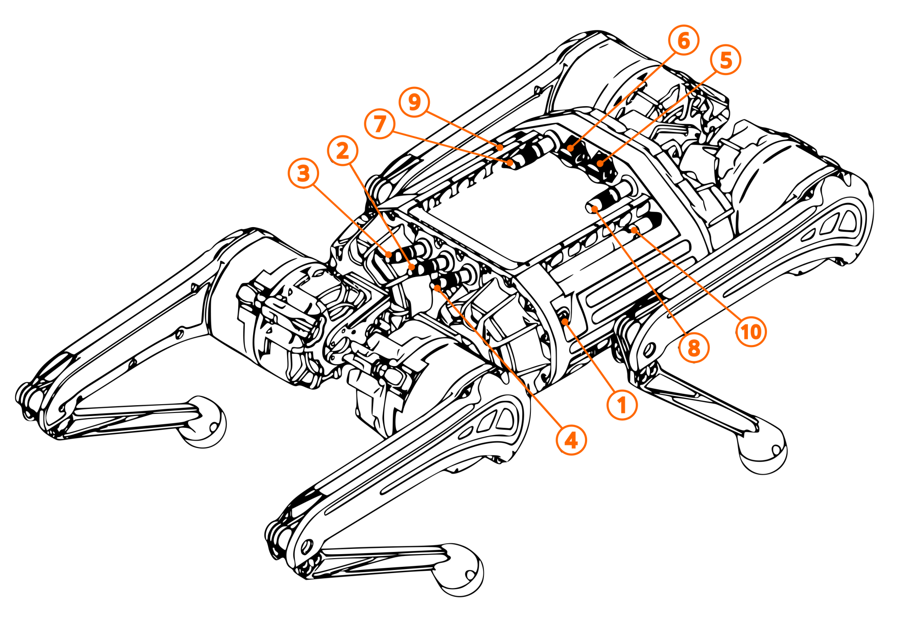
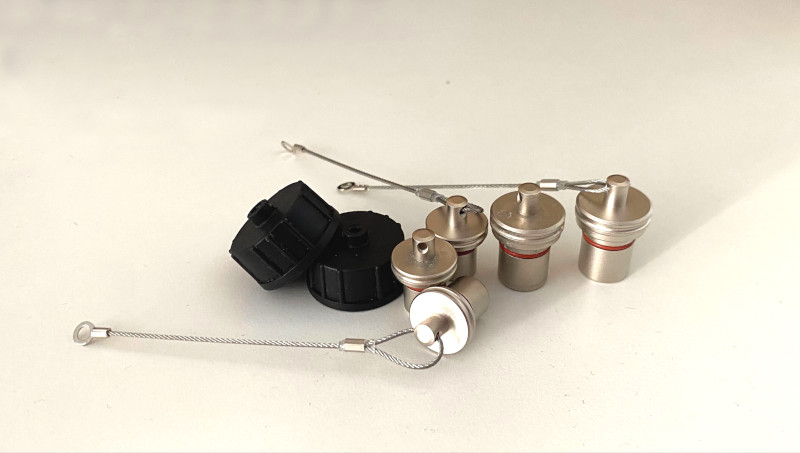
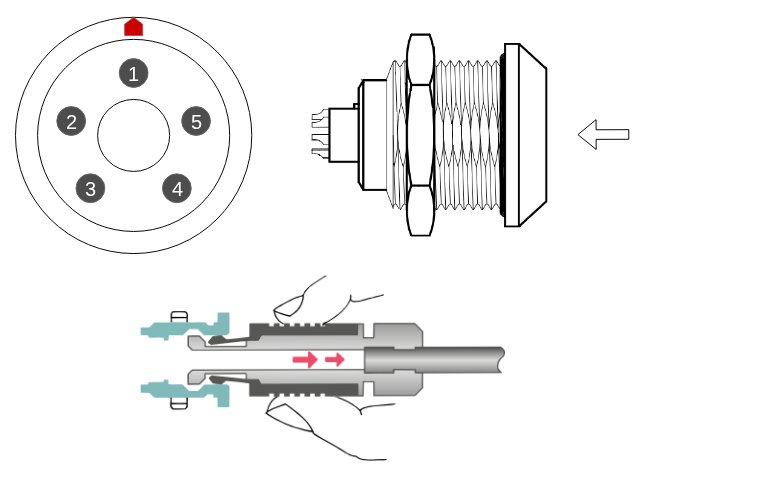
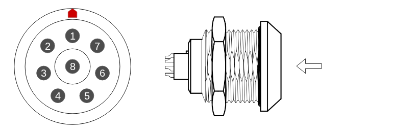

Connectors#
Connectors#
The robot includes several connectors, a power button, and status LEDs. Their location may vary depending on the hardware version.
To plug the cable to the connector:
match connector and cable orientation by aligning red markers,
push the cable into the connector, until audible and/or haptic click.
To unplug the connector:
firmly grab cable connectors body,
slightly pull the connector housing, internal sliding mechanism will be actuated (refer to schematic),
pull the cable from the socket - it should come out without significant force requirement.
for battery connector, always plug battery connector plug immediately after disconnecting from the robot.

Connector number |
Function |
|---|---|
1 |
Power Button |
2 |
AUX 1 |
3 |
Charger |
4 |
AUX 2 (e-stop) |
5 |
LAN |
6 |
APC (Orin) USB 3.0 |
7 |
LPC USB 3.0 |
8 |
WAN/LAN |
9 |
WiFi Antenna |
10 |
WiFi Antenna |
For the canonical description of the onboard computers (LPC / APC), their roles and network addresses, see Platform.
Environmental safety#
While all robots connectors were selected and rated for outdoor use, they must remain plugged at all times during operation.
Warning
The ports without plugged connector (or matching plug) are not suitable for use near water, dust, dirt or in high humidity scenarios!
There are 3 types of plugs for the robot:
2x plastic USB port cap,
2x 12mm plug (LAN, WAN/LAN),
3x 10mm plug (AUX1, AUX2, Charger)

AUX1#
AUX1 connector hosts payload power connector and dedicated FDCAN lines.

Pinout is as follows:
Pin no. |
Function |
|---|---|
1 |
Not Connected |
2 |
VCC 36V-50.4V, up to 50W |
3 |
GND |
4 |
FDCAN - CAN L |
5 |
FDCAN - CAN H |
AUX2#
AUX2 connectors hosts isolated 5V supply, and Emergency Stop inputs.
Pinout is as follows:
Pin no. |
Function |
|---|---|
1 |
Not Connected |
2 |
5V (Isolated), up to 10W |
3 |
GND (Isolated) |
4 |
E-stop |
5 |
E-stop |
Warning
This connector offers isolated output - its outputs should not be shorted to regular GND (in AUX1) nor to the robots’ chassis. Shorting ant of the connections to the batteries GND, may lead to damage to internal electronics.
LAN#
The LAN connector (located on the left side of the rear panel) provides standard wired Ethernet connectivity.

Pinout is as follows:
Pin no. |
Color |
|---|---|
1 |
white-orange |
2 |
orange |
3 |
white-green |
4 |
green |
5 |
white-brown |
6 |
brown |
7 |
white-blue |
8 |
blue |
Warning
The socket pinout corresponds to the RJ45 T568B wiring standard.
WAN/LAN#
The WAN/LAN connector (located on the right side of the rear panel) provides standard wired Ethernet connectivity.
Pinout is as follows:
Pin no. |
Color |
|---|---|
1 |
white-orange |
2 |
orange |
3 |
white-green |
4 |
green |
5 |
white-brown |
6 |
brown |
7 |
white-blue |
8 |
blue |
Warning
The socket pinout corresponds to the RJ45 T568B wiring standard.
E-stop#
If E-stop button is used, it should be normally-closed, pressing the button should disconnect the circuit.
There are two input pins connected to the robots E-stop mechanism. These pins should be shorted to each other during normal operation. The circuit operates in normally-closed manner. The E-stop circuit has direct hardware connection to robots power system, bypassing software for always-ready emergency use.
Note
This is ‘hard’ E-stop mechanism, using it will immediately cut the power to robots’ legs, leading to a fall. This may, lead to unintended damage to the robot and its surrounding. Additionally sudden power cutoff may lead to voltage surges that can damage electronics, including exposed payload power port. Avoid using E-stop, except in emergency
Charger port#
Charger port is only suitable to work with MAB supplied charger.